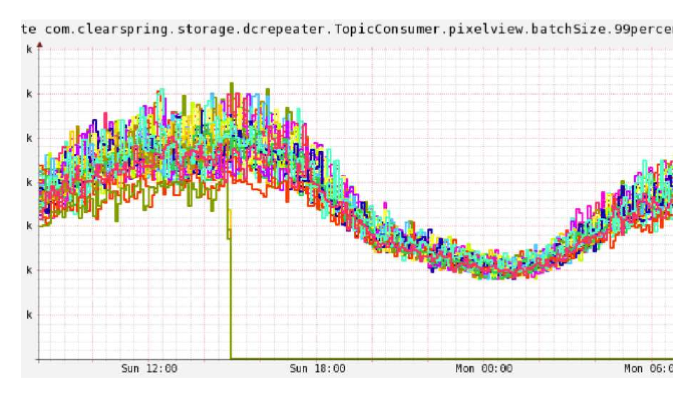
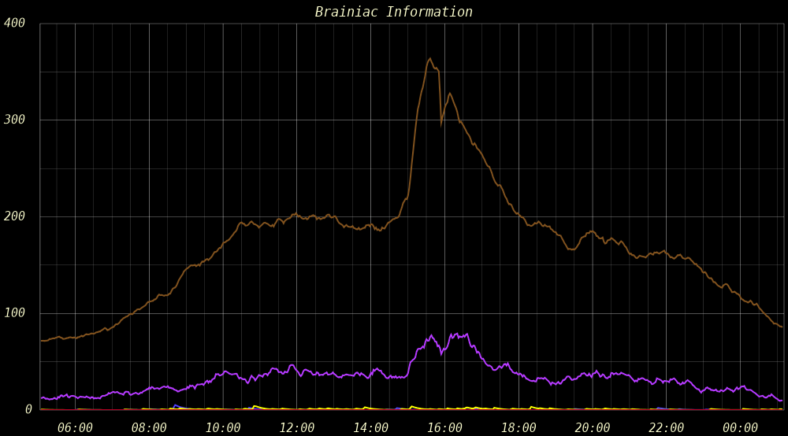
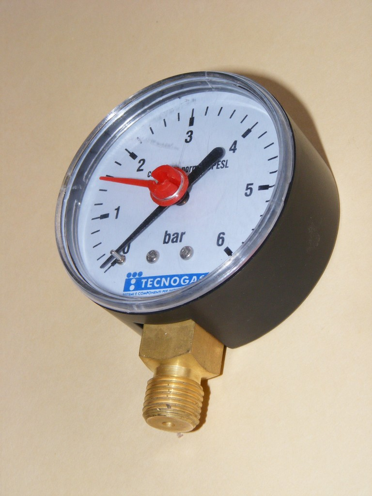
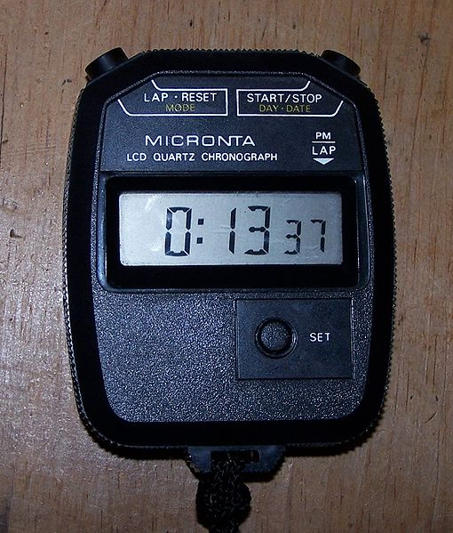
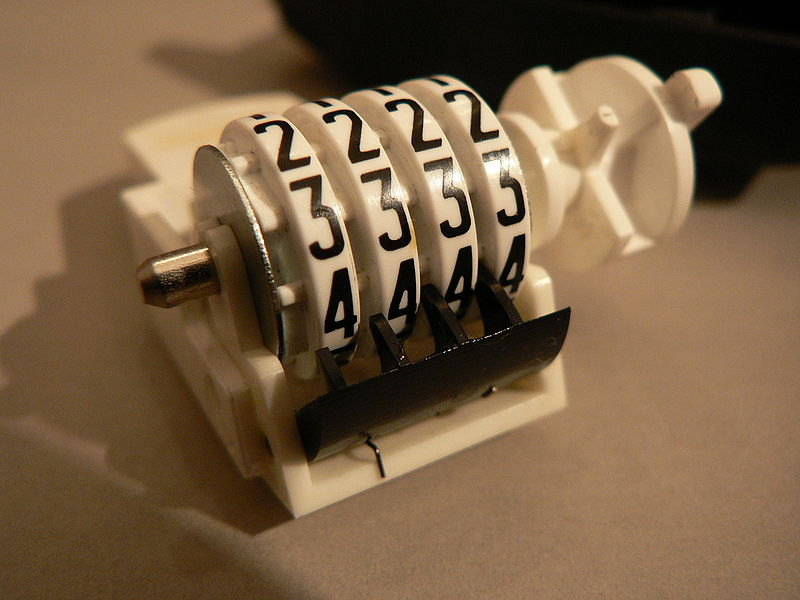
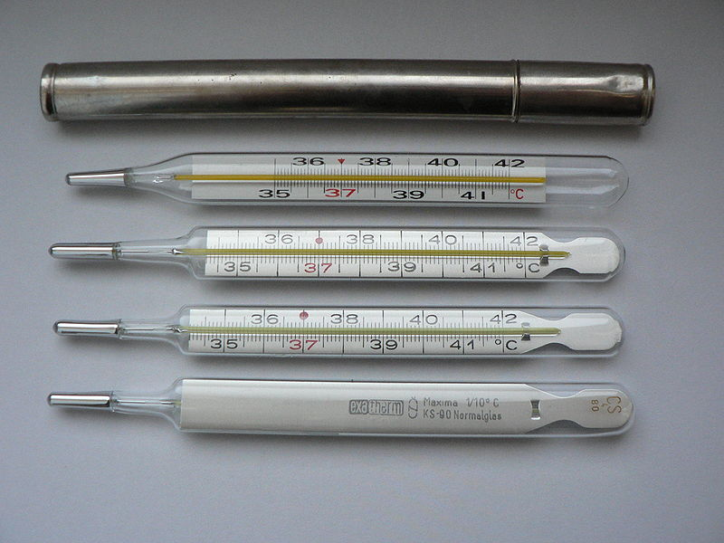
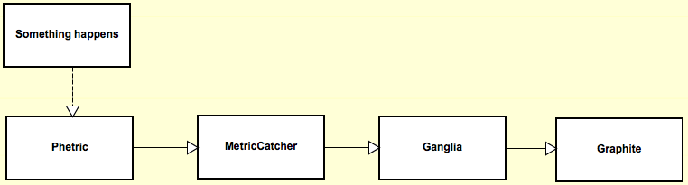
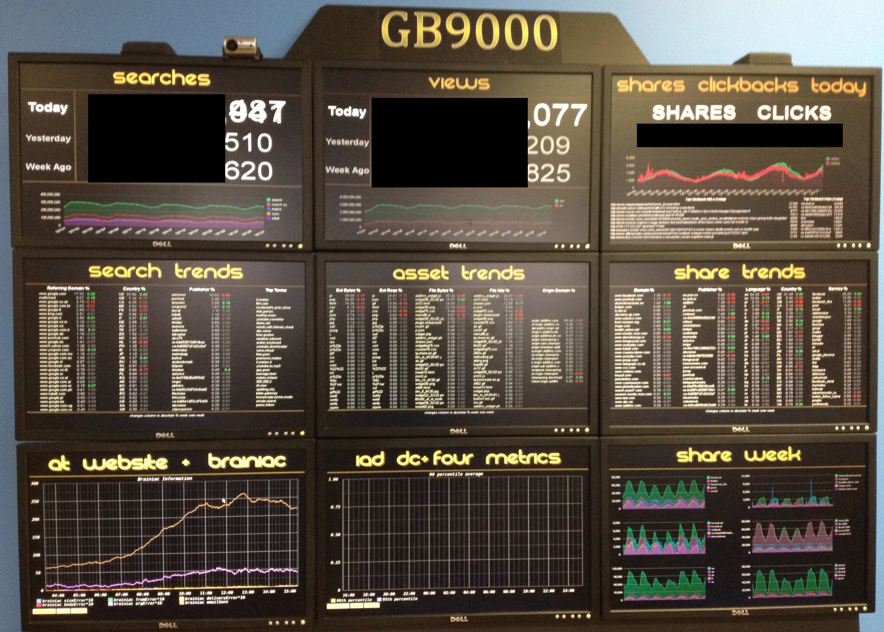

This is a PSA
Why do you want metrics?
How we use metrics
Planning
Find Problems
Even the ones we didn't know we had
Going Down

What do you alert on?
Brainiac Wut

StatsD
Dead simple
StatsD
Dead simple
(that's important)
StatsD
Dead simple
(that's important)
Only counters & timers
StatsD
Dead simple
(that's important)
Only counters & timers
Talks to Graphite
Metrics
Metrics (proper noun)
Metrics offers many different metrics
Gauges

Timers

Counter

Meter

Histogram
How do I count things across requests?
Metrics from top to bottom

Setup Phetric
Phetric_Sender::init( 'localhost', '1420', $prepend );
$prepend = $app . $env;
All at once or as they come?
Autoflush paramater will send metrics immediately
Useful for long running scripts
JSON format
{ "name":"server.application.section.metric_name", "value":7, "type":"meter", "timestamp":unix_time.millis }
MetricCatcher
Access to everything in Metrics
Handles persistence
Listens for JSON
Talks to Ganglia and Graphite
Ganglia
Drew, explain this
Cluster Overview

Machine Overview

Metric Drilldown

You use Graphite, too?
GB9k

What should I graph?
Changing time periods
Drilldown to specific machines
Questions?